User Experience design &
Informationsarkitektur
content goes here
Sthlm skyline parallax
by
Rasmus Bergström
is licensed under a
Creative Commons Attribution-NonCommercial-NoDerivatives 4.0 International License
.